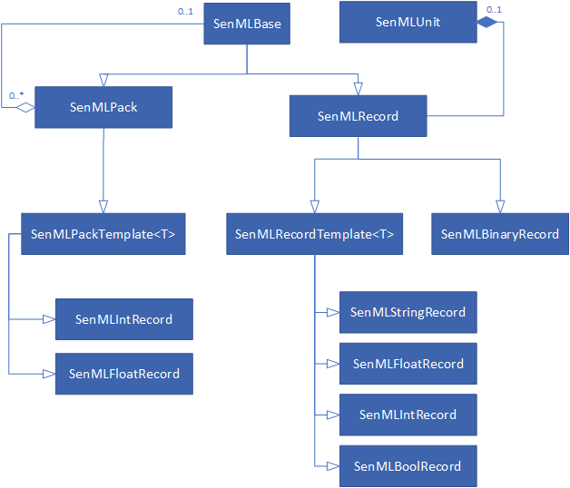
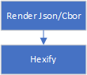

Introduction
Welcome to the KPN ThingsML API documentation! You can use our library for the creation of senml documents on embedded devices so you can transport and/or receive data in a uniform way to and from devices using a communication protocol of your choice.
For an indepth look into what senml is and what it can mean for you, check out this article.
Key features
- Object oriented design.
- Built in support for senml's unit registry
- Extensible for new data types
- Makes use of (but doesn't restrict to) ThingsML predefined list of record names via ThingsML indices.
- Direct support to read/write in json and cbor format.
- Automatically adjusts record data with respect to base time, base value & base sum.
- The library is optimized for devices with restricted memory requirements (runs on AVR systems with 1KB ram).
Supported platforms
The library has been tested on the following platforms with their respective devices:
- Arduino
- Arduino leonardo (through the marvin lorawan board)
- Arduino Uno
- Arduino MKR WAN 1300
- Arduino MKR GSM 1400
- Sodaq Sara AFF
- Mbed OS
- PC (windows/linux via Bazel)
Getting Started
Installation
Get it from github
You can import it using this link: mbed thingsml library (click on 'import into compiler) or directly from within the mbed online editor. Search for the library thingsml
- Get the library. You can find the language appropriate link to the right.
- Installation:
- arduino:
- from Library manager (Tools->Manage Libraries...), search for 'ThingsML'
- mbed: on the mbed online editor:
- create or open a project
- right click on the project and select 'import library'
- if you select from url, use the mbed thingsml library
- if you select: 'from import wizard':
- search for 'thingsml'
- double click on the search result which will start the import process.
- arduino:
Usage for LoRaWAN
#include <thingsml.h>
#include <thingsml.h>
- First off, you need to include the library in your sketch or application. So put the example code (in the right side panel) somewhere near the top of your source.
SenMLPack device;
SenMLPack device;
Serial pc(USBTX, USBRX);
- Next, you have to declare a variable of type 'SenMLPack', which will function as the document that contains all your measurement values. This can be a global or local to a function.
SenMLDoubleRecord temperature(THINGSML_TEMPERATURE);
void setup() {
Serial.begin(9600);
device.add(temperature);
}
void loop(){
int val = analogRead(A1);
temperature.set(val);
SenMLDoubleRecord temperature(THINGSML_TEMPERATURE);
int main() {
device.add(temperature);
// check mypin object is initialized and connected to a pin
if(mypin.is_connected()) {
printf("mypin is connected and initialized! \n\r");
}
mypin.mode(PullNone);
while(1) {
int val = mypin.read();
temperature.set(val);
- Measurement values are added to the document through objects of the type SenMlRecord. These can also be global, statically declared objects or they can be local to a function. These always need to have a value or sum, but usually you also give records a name and measurement unit. The library contains a set of predefined values for both records a name and measurement unit via the ThingsMLMeasurementIndex enum. Although you are free to pick any record name that you want, this is not the case for the units. This list is fixed via the SenMLUnit enum.
device.toJson(Serial); //print to screen
}
device.toJson(pc); //print to screen
pc.printf("\n\r");
}
}
- finally, you can render the senml json string and print it out. This can be either to a stream or you can render it to a memory buffer.
The resulting code snippet reads the value, stores this measurement in a senml record as temperature in degrees Celsius. The document object renders a json string to the Serial output.
Usage for m2m
Usage for m2m devices (2G/Lte-m based) is very similair to LoRaWAN with the exception that the data is transmitted using TCP to an HTTP server. To ease development ThingsML includes a HTTP Post builder, which includes functionality to calculate the needed authentication token. For naming and units the SENML_NAME/SENML_UNIT enums are used instead of the THINGSML enum, see further in these docs under "Names and Units" for the complete list.
#include <thingsml_http.h>
#include <thingsml_http.h>
- To obtain this functionality a different header has to be included.
SenMLPack device("urn:dev:IMEI:1234:"); // Device name is now required and cannot be omitted like in LoRa.
SenMLDoubleRecord temperature(SENML_NAME_TEMPERATURE, SENML_UNIT_DEGREES_CELSIUS);
char output[500] = {0}; // 500 characters is big enough for most messages.
void setup() {
Serial.begin(9600);
device.add(temperature);
}
void loop(){
int val = analogRead(A1);
temperature.set(val);
int len = ThingsML::httpPost(output, 500, "MYKEY", "1.1.1.1", "/post/path", device);
Serial.println(output);
}
SenMLPack device("urn:dev:IMEI:1234:"); // Device name is now required and cannot be omitted like in LoRa.
SenMLDoubleRecord temperature(SENML_NAME_TEMPERATURE, SENML_UNIT_DEGREES_CELSIUS);
Serial pc(USBTX, USBRX);
char output[500] = {0}; // 500 characters is big enough for most messages.
int main() {
device.add(temperature);
// check mypin object is initialized and connected to a pin
if(mypin.is_connected()) {
printf("mypin is connected and initialized! \n\r");
}
mypin.mode(PullNone);
while(1) {
int val = mypin.read();
temperature.set(val);
int len = ThingsML::httpPost(output, 500, "MYKEY", "1.1.1.1", "/post/path", device);
pc.printf(output);
pc.printf("\n\r");
}
}
- Also serilization is slightly different and is only possible using a buffer. This restrictions exists because of the required token.
Examples
Further code examples can be found by using the examples packaged with this library. These can be found in the Arduino IDE under File>Examples>ThingsML.
Firmware over the air (m2m only)
Using the Fota infrastructure on the KPN network it is possible to do firmware over the air (fota), this is currently available for premium customers upon request. The fota process works as follows:
- Upon sending a message the response could contain a fota SenML payload containing a "token" and "url".
- If a token and url is received the fota download can begin.
- The download works by requesting parts from the "url".
- Each part is requested by setting the Range http header to the correct range in bytes.
- The "token" needs to be used as Bearer authorization.
- The total amount of parts can be deduced from the Content-Range http header in the response.
- The part can be validated using the returned Digest http header.
- After all parts are downloaded and stored. The hardware specific firmware upgrade can be executed.
To allow easy implementation the SDK offers the following functions/classes:
- ThingsML::HttpFirmwareDownload class storing firmware message information
- ThingsML::HttpFirmwareDownload::parseFirmwareMessage parses incoming messages if it contains valid fota information.
- ThingsML::HttpFirmwareDownload::getHost the host (ip) of the file server extracted from the recent message.
- ThingsML::HttpFirmwareDownload::getPort the port of the file server extracted from the recent message.
- ThingsML::HttpFirmwareDownload::getFirmwarePartRequest generates a part http request.
- ThingsML::HttpFirmwareDownload::getTotalSizeFromResponse extracts the total size from a part response.
- ThingsML::HttpFirmwareDownload::getNumParts the total number of parts in this firmware using the total size in bytes.
- ThingsML::HttpFirmwareDownload::getCRC32FromResponse extracts the crc32 from a part response.
- ThingsML::HttpFirmwareDownload::calculateCRC32FromBody calculates a crc32 to verify.
- ThingsML::getHttpBodyStart Find the start position of the http body (where the firmware bytes start)
Example
How the firmware functions can be used to perform a fota is illustrated using the Arduino example "arduino_mkr_gsm_1400_fota.ino".
It works in the following 5 steps: 1. Upon receiving a message http response, parse if it contains a firmware message. 2. Download the first firmware part, validating the correct working of the url & token and also obtaining the total firmware size. 3. Prepare the firmware file on the SD card. 4. Download the other parts of the firmware file into the SD card file. 5. Reboot the device to allow the bootloader to pickup the new firmware file.
Details
The more in depth details of the library are explained below.
Object oriented: class structure

The root class for all senml documents is called 'SenMlPack'. It defines the base name, base unit and base time of the document. This object can also contain 0, 1 or more SenMlRecords where each record represents a single measurement (or command for actuators).
In order to declare a base value or base sum, you have to use one of SenMLPack's descendants with the correct data type.
The library contains a pre-defined SenMlRecord class for the most common data types: string, boolean, double, float, integer and binary. But, you can extend this with your own types through the SenMLRecord template for basic data types such as longlong.
A SenMLPack can contain all object types as children: anything that descends from SenMLBase can be a child. See gateways for more info.
Names and Units
The library defines an enum for all of senml's supported measurement units (as in 'kilogram', 'meter',...). This makes it easier to keep compliance with the senml specifications so you don't have to worry about the exact unit symbols: the library takes care of this.
Similarly, the library also provides an enum with all the ThingsML names that the ThingsML standard supports.
Although it is possible that you assign your own name to a record, it is recommended to use the ThingsML naming convention (for LoRa) and SenML naming convention (for m2m) as this allows data to be addressed in a more semantic manner.
According to the SenML specifications, all names are optional, so you don't have to declare a base name on the SenMLPack object nor a name for SenMLRecords. This makes it harder though to identify your data.
In general, it is advisable to specify the name of the device as the base name and the name of the sensor as the record name. Alternatively, you can skip the base name and put both device and sensor name in the record, in this format: device:sensor.
The following ThingsML/SenML enums with their respective names and units are supported:
| ThingsML Enum Key | SenML Enum Key | SenML Unit Key | Name | Unit |
|---|---|---|---|---|
| THINGSML_TEMPERATURE | SENML_NAME_TEMPERATURE | SENML_UNIT_DEGREES_CELSIUS | temperature | Cel |
| THINGSML_HUMIDITY | SENML_NAME_HUMIDITY | SENML_UNIT_RELATIVE_HUMIDITY | humidity | %RH |
| THINGSML_LATITUDE | SENML_NAME_LATITUDE | SENML_UNIT_DEGREES_LATITUDE | latitude | lat |
| THINGSML_LONGITUDE | SENML_NAME_LONGITUDE | SENML_UNIT_DEGREES_LONGITUDE | longitude | lon |
| THINGSML_ALTITUDE | SENML_NAME_ALTITUDE | SENML_UNIT_METER | altitude | m |
| THINGSML_POWER | SENML_NAME_POWER | SENML_UNIT_WATT | power | W |
| THINGSML_PRESSURE | SENML_NAME_PRESSURE | SENML_UNIT_PASCAL | pressure | Pa |
| THINGSML_ANGLE | SENML_NAME_ANGLE | SENML_UNIT_RADIAN | angle | rad |
| THINGSML_LENGTH | SENML_NAME_LENGTH | SENML_UNIT_METER | length | m |
| THINGSML_BREADTH | SENML_NAME_BREADTH | SENML_UNIT_METER | breadth | m |
| THINGSML_HEIGHT | SENML_NAME_HEIGHT | SENML_UNIT_METER | height | m |
| THINGSML_WEIGHT | SENML_NAME_WEIGHT | SENML_UNIT_KILOGRAM | weight | kg |
| THINGSML_THICKNESS | SENML_NAME_THICKNESS | SENML_UNIT_METER | thickness | m |
| THINGSML_DISTANCE | SENML_NAME_DISTANCE | SENML_UNIT_METER | distance | m |
| THINGSML_AREA | SENML_NAME_AREA | SENML_UNIT_SQUARE_METER | area | m2 |
| THINGSML_VOLUME | SENML_NAME_VOLUME | SENML_UNIT_CUBIC_METER | volume | m3 |
| THINGSML_VELOCITY | SENML_NAME_VELOCITY | SENML_UNIT_VELOCITY | velocity | m/s |
| THINGSML_ELECTRIC_CURRENT | SENML_NAME_ELECTRIC_CURRENT | SENML_UNIT_AMPERE | electricCurrent | A |
| THINGSML_ELECTRIC_POTENTIAL | SENML_NAME_ELECTRIC_POTENTIAL | SENML_UNIT_VOLT | electricPotential | V |
| THINGSML_ELECTRIC_RESISTANCE | SENML_NAME_ELECTRIC_RESISTANCE | SENML_UNIT_OHM | electricResistance | Ohm |
| THINGSML_ILLUMINANCE | SENML_NAME_ILLUMINANCE | SENML_UNIT_LUX | illuminance | lx |
| THINGSML_ACCELERATION_X | SENML_NAME_ACCELERATION_X | SENML_UNIT_ACCELERATION | accelerationX | m/s2 |
| THINGSML_ACCELERATION_Y | SENML_NAME_ACCELERATION_Y | SENML_UNIT_ACCELERATION | accelerationY | m/s2 |
| THINGSML_ACCELERATION_Z | SENML_NAME_ACCELERATION_Z | SENML_UNIT_ACCELERATION | accelerationZ | m/s2 |
| THINGSML_HEADING | SENML_NAME_HEADING | SENML_UNIT_RADIAN | heading | rad |
| THINGSML_CO_CONCENTRATION | SENML_NAME_CO_CONCENTRATION | SENML_UNIT_PARTS_PER_MILLION | COConcentration | ppm |
| THINGSML_CO2_CONCENTRATION | SENML_NAME_CO2_CONCENTRATION | SENML_UNIT_PARTS_PER_MILLION | CO2Concentration | ppm |
| THINGSML_SOUND | SENML_NAME_SOUND | SENML_UNIT_DECIBEL | sound | db |
| THINGSML_FREQUENCY | SENML_NAME_FREQUENCY | SENML_UNIT_HERTZ | frequency | Hz |
| THINGSML_BATTERY_LEVEL | SENML_NAME_BATTERY_LEVEL | SENML_UNIT_PERCENTAGE_REMAINING_BATTERY_LEVEL | batteryLevel | %EL |
| THINGSML_BATTERY_VOLTAGE | SENML_NAME_BATTERY_VOLTAGE | SENML_UNIT_VOLT | batteryVoltage | V |
| THINGSML_RADIUS | SENML_NAME_RADIUS | SENML_UNIT_METER | radius | m |
| THINGSML_BATTERY_LEVEL_LOW | SENML_NAME_BATTERY_LEVEL_LOW | SENML_UNIT_RATIO | batteryLevelLow | / |
| THINGSML_COMPASS_X | SENML_NAME_COMPASS_X | SENML_UNIT_TESLA | compassX | T |
| THINGSML_COMPASS_Y | SENML_NAME_COMPASS_Y | SENML_UNIT_TESLA | compassY | T |
| THINGSML_COMPASS_Z | SENML_NAME_COMPASS_Z | SENML_UNIT_TESLA | compassZ | T |
| THINGSML_READ_SWITCH | SENML_NAME_READ_SWITCH | SENML_UNIT_RATIO | readSwitch | / |
| THINGSML_PRESENCE | SENML_NAME_PRESENCE | SENML_UNIT_NONE | presence | |
| THINGSML_COUNTER | SENML_NAME_COUNTER | SENML_UNIT_NONE | counter |
Associating records with a document
SenMLDoubleRecord temperature(THINGSML_TEMPERATURE);
device.add(temperature);
SenMLDoubleRecord temperature(THINGSML_TEMPERATURE);
device.add(temperature);
You can add records to the document with the function add. This can be done statically (add once at start up and never remove ) for devices that will always send out the same document structure with the same records. Or, you can dynamically add records to the document as your application progresses. A common use case for this method is when the device does not have network connectivity at the moment that the measurement is taken, but instead, takes a number of measurements, and, when a connection is available, uploads all the measurements at once. This method is also useful to minimize the number of communication packets that a device sends out by grouping multiple measurements into a single data packet.
doc.clear();
doc.clear();
For documents that work with a dynamically sized list of records, you can clear out the list once the data has been sent.
Alternatively, when SenMlRecords go out of scope or are deleted, they remove themselves automatically from their root document.
Looping over the records
SenMLPack device("device_name");
SenMLDoubleRecord temperature(THINGSML_TEMPERATURE);
device.add(temperature);
SenMLBase* item = device.getFirst();
while(item != NULL){
Serial.println(((SenMLRecord*)item)->getName());
item = item->getNext();
}
SenMLPack device("device_name");
SenMLDoubleRecord temperature(THINGSML_TEMPERATURE);
device.add(temperature);
SenMLBase* item = device.getFirst();
while(item != NULL){
printf(((SenMLRecord*)item)->getName());
item = item->getNext();
}
Internally a linked list is used to store the records that it manages. This helps in minimizing the usage of dynamically allocated memory (important for devices with little available ram).
To walk over the child list of a SenMLPack, you can use the following functions:
- SenMLPack::getFirst() : retrieve the first item in the list
- SenMLBase::getNext() : get the next item in the list. When this returns NULL, the end of the list has been reached.
Gateways
SenMLPack doc("gateway");
SenMLPack dev1("dev1");
SenMLPack dev2("dev2");
doc.add(dev1);
doc.add(dev2);
SenMLFloatRecord rec1(THINGSML_TEMPERATURE);
dev1.add(rec1);
SenMLStringRecord rec2("text", SENML_UNIT_NONE, "working");
dev2.add(rec2);
SenMLPack doc("gateway");
SenMLPack dev1("dev1");
SenMLPack dev2("dev2");
doc.add(dev1);
doc.add(dev2);
SenMLFloatRecord rec1(THINGSML_TEMPERATURE);
dev1.add(rec1);
SenMLStringRecord rec2("text", SENML_UNIT_NONE, "working");
dev2.add(rec2);
It is possible to transmit/receive SenMLPack objects that contain other SenMLPack objects. This is used by gateways that work as an intermediate for devices that don't have a direct connection with the outside world or which can't speak senml and need a device that performs a translation between the protocol that they understand and senml.
Creating such messages is pretty straight forward, just like you add SenMLRecords to a Pack, you can also add SenMLPack objects. A SenMLPack can contain both SenMLRecords and other SenMLPack objects at the same time. This means that the gateway can contain it's own sensor data, besides the information from the other devices.
This works for sensor values that need to be sent out and for actuators.
Rendering
SenMLPack device("device_name");
SenMLFloatRecord temperature(THINGSML_TEMPERATURE, 23.1);
device.add(temperature);
device.toJson(Serial); //render as a json string to the stream
char buffer[120] = {0};
device.toJson(buffer, sizeof(buffer)); //render as a json string to a memory buffer
Serial.println(buffer);
device.toJson(buffer, sizeof(buffer), SENML_HEX); //render as a hexified json string to a memory buffer
Serial.println(buffer);
device.toCbor(Serial); //render it as a raw binary data blob directly to stream
device.toCbor(Serial, SENML_HEX); //directly rendering HEX values to stream
device.toCbor(buffer, sizeof(buffer), SENML_HEX); //render cbor HEX values to memory
Serial.println(buffer);
Serial pc(USBTX, USBRX);
SenMLPack device("device_name");
SenMLFloatRecord temperature(THINGSML_TEMPERATURE);
device.add(temperature);
device.toJson(pc); //render as a json string to the stream
pc.printf("\n\r");
char buffer[120] = {0};
device.toJson(buffer, sizeof(buffer)); //render as a json string to a memory buffer
pc.printf(buffer);
pc.printf("\n\r");
device.toJson(buffer, sizeof(buffer), SENML_HEX); //render as a hexified json string to a memory buffer
pc.printf(buffer);
pc.printf("\n\r");
device.toCbor(pc); //render it as a raw binary data blob directly to stream
pc.printf("\n\r \n\r");
device.toCbor(pc, SENML_HEX); //directly renering HEX values to stream
pc.printf("\n\r \n\r");
device.toCbor(buffer, sizeof(buffer), SENML_HEX); //render cbor HEX values to memory
pc.printf(buffer);
pc.printf("\n\r \n\r");
If you want to send out your sensor data, the code objects first need to be converted into a format that can easily be transported. This is usually in the form of a json string or binary cbor data.

The rendering engine has the following features and characteristics:
- It can render directly to a stream or to a memory blob. When rendering to a stream the system will use less memory since nothing is buffered but directly emitted to the stream.
- The engine can produce:
- json data, in the form of a string
- cbor data, which is a binary format
- The engine can add a final step in the rendering process where the raw data (string or binary) is converted into HEX format. This is useful while rendering directly to a stream that expects hex data, which is the case for many LoRa modules.
- for each value that has to be rendered, all stages are done before moving on to the next value: each value gets converted to json or cbor, hexified and rendered to the output before moving on to the next value. This is also done to save memory.
Decoding
void setTemp(int value){
Serial.println("set the temp of the boiler to %i \r\n", value);
}
void onActuator(const char* device, const char* record, const void* value, int valueLength, SenMLDataType dataType)
{
Serial.println("for unknown records");
printData(device, record, value, valueLength, dataType);
}
SenMLPack device("device_name", onActuator);
SenMLIntActuator temperature(THINGSML_TEMPERATURE, setTemp);
void setup(){
Serial.begin(57600);
senMLSetLogger(Serial);
device.add(temperature);
}
void loop(){
const char * buffer = "[{\"i_\":-24,\"v\":23}]";
device.fromJson(buffer);
if(Serial.available()) {
device.fromCbor(Serial, SENML_HEX);
}
}
Serial pc(USBTX, USBRX);
void setTemp(int value){
pc.printf("set the temp of the boiler to %i \r\n", value);
}
void onActuator(const char* device, const char* record, const void* value, int valueLength, SenMLDataType dataType)
{
pc.printf("for unknown records");
printData(device, record, value, valueLength, dataType);
}
//use an interrupt callback so we only start to parse when data is available.
//the Serial.readable() function behaves funky and returns 1 even if there is no char available.
void serialDataCallback() {
doc.fromCbor(pc, SENML_HEX); //will block until a full message has arrived.
}
SenMLPack device("device_name", onActuator);
SenMLIntActuator temperature(THINGSML_TEMPERATURE, setTemp);
int main() {
senMLSetLogger(pc);
device.add(temperature);
pc.attach(&serialDataCallback); // attach pc ISR for reading from stream
while(1) {
const char * buffer = "[{\"i_\":-24,\"v\":23}]";
device.fromJson(buffer);
pc.printf("done \r\n \r\n");
}
}
Extracting the appropriate information out of senml objects and converting it into the proper format so that the information can be used to drive actuators, can be a bit tedious on embedded devices. The senml library can help you with this so that it becomes easy to send senml messages to your device as actuator commands (send instructions to your devices). It provides a parsing engine that can handle both json and cbor senml data.
To process a senml message and retrieve the values, you can use the 'fromJson' or 'fromCbor' functions. The values found in the message get passed to your application by means of callback functions that you attach to the SenMlPacket object and/or the SenMlRecords.
If you have a static list of records in your document, you can declare all the objects once, at the beginning, just like for rendering. The only difference here is that you have to attach a callback to each record for which you want to receive events. During parsing, each callback will be executed when the record is found in the data.
If your device will receive a dynamic list of records or you want to have a 'catch-all' for unknown records found in the message, than you should attach a callback to the root SenmlPack document. This function gets called for every record found in the data that can't be passed on to a known SenMLRecord. Besides the actual value, which is passed on as a generic void pointer, you also receive the name of the device, the name of the record and the data type so that your application can figure out what it should do for the specified data.
implementing your own record types
It is possible to create your own, custom SenMlRecord classes. This can be used to provide support for more complex data types than already available in the library. For instance, if you would like to work with a single SenMLRecord to represent location info (lat/lng/alt instead of 3 individual ones, than you could create a new class that inherits from the SenMlRecord that re-implement the rendering and parsing functions.
For the C++ version of the library, it can also be useful to add support for more basic data types such as longlong. This can easily be done through the SenMLRecordTemplate